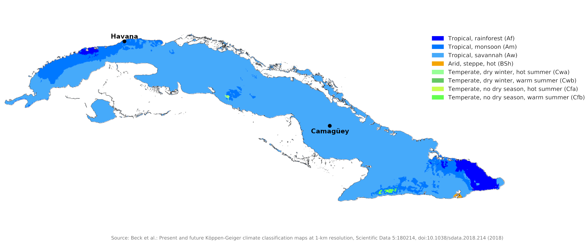
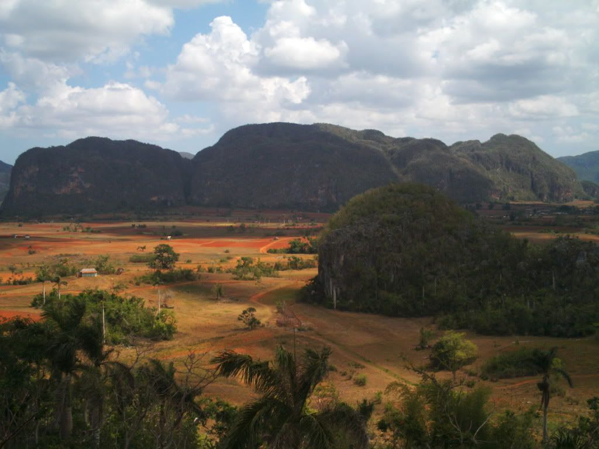
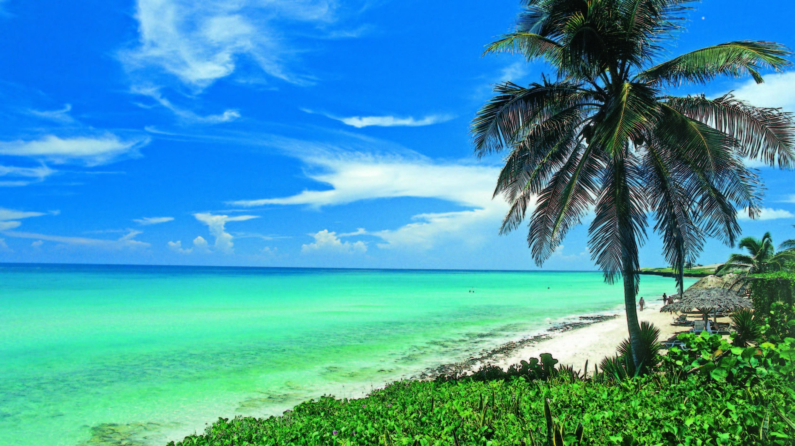
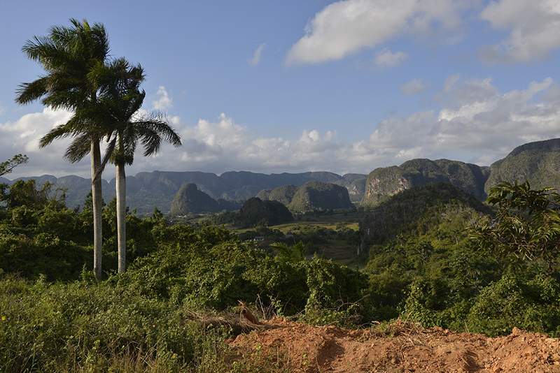
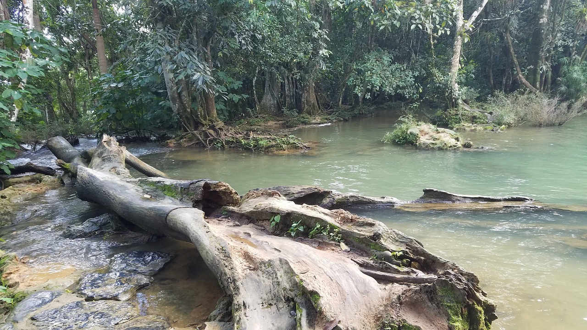
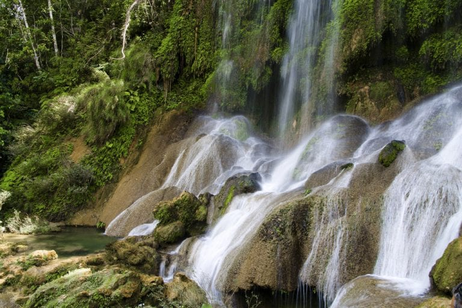

Cuba is an island country in the Caribbean, comprising the island of Cuba (largest island), Isla de la Juventud, and 4,195 islands, islets and cays surrounding the main island. It is located where the northern Caribbean Sea, Gulf of Mexico, and Atlantic Ocean meet. Cuba is located east of the Yucatán Peninsula (Mexico), south of both Florida and the Bahamas, west of Hispaniola (Haiti/Dominican Republic), and north of Jamaica and the Cayman Islands. Havana is the largest city and capital. Cuba is the third-most populous country in the Caribbean after Haiti and the Dominican Republic, with about 10 million inhabitants. It is the largest country in the Caribbean by area.

With the entire island south of the Tropic of Cancer, the local climate is tropical, moderated by northeasterly trade winds that blow year-round. The temperature is also shaped by the Caribbean current, which brings in warm water from the equator. This makes the climate of Cuba warmer than that of Hong Kong, which is at around the same latitude as Cuba but has a subtropical rather than a tropical climate. In general (with local variations), there is a drier season from November to April, and a rainier season from May to October. The average temperature is 21 °C (70 °F) in January and 27 °C (81 °F) in July. The warm temperatures of the Caribbean Sea and the fact that Cuba sits across the entrance to the Gulf of Mexico combine to make the country prone to frequent hurricanes. These are most common in September and October.

Cuban cuisine is a fusion of Spanish and Caribbean cuisines. Cuban recipes share spices and techniques with Spanish cooking, with some Caribbean influence in spice and flavor. Food rationing, which has been the norm in Cuba for the last four decades, restricts the common availability of these dishes. The traditional Cuban meal is not served in courses; all food items are served at the same time. Some popular Cuban dishes include:

When it comes to tourism, Cuba offers a rich tapestry of attractions, from vibrant cities and historical sites to stunning beaches and lush landscapes, here are the top 5 tourist attractions in Cuba:
| Tourist Attraction | Description |
|---|---|
| Havana | The capital city, known for its vibrant culture, historic architecture, and lively music scene. |
| Varadero Beach | A world-famous beach destination with pristine white sands and crystal-clear waters. |
| Viñales Valley | A UNESCO World Heritage site known for its stunning landscapes, tobacco farms, and traditional rural life. |
| Trinidad | A beautifully preserved colonial town with cobblestone streets, colorful buildings, and a rich history. |
| Cienfuegos | A coastal city known as the "Pearl of the South," featuring French-inspired architecture and a picturesque bay. |
If you want to learn more about Cuba attractions, watch the video below made by Travelmoji.
Cuba is home to a diverse range of flora and fauna, the country's varied ecosystems include tropical rainforests, savannas, wetlands, and coastal areas. Pictures of Cuba's nature are shown below:

Cuba desert

Cuban beach

A shot taken near some hills.

A log next to a river in Cuba.

A waterfall in Cuba.